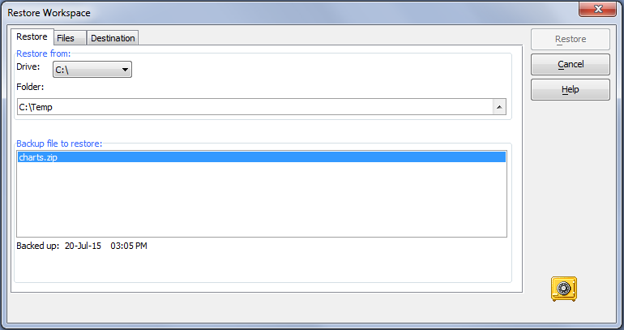
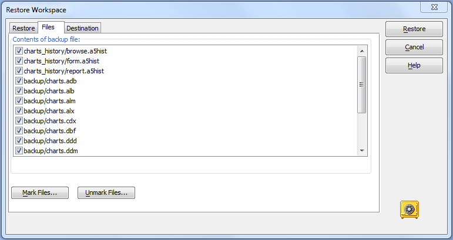
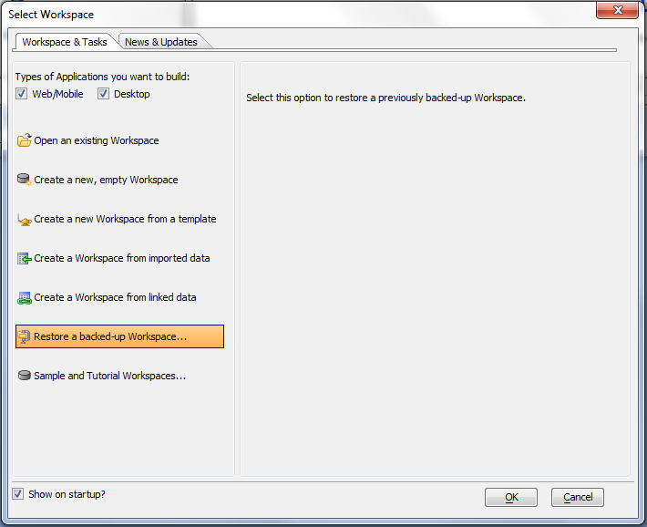

Restore a Workspace Backup
|
Restore a workspace:
From the Control Panel select Tools > Backup/Restore Workspace > Restore Workspace.

Optionally, select a backup file from the list and click Restore.
Optionally, click Files and select the specific workspace backup to restore, or select to back up and restore individual files.

Alternatively, you can use the Alpha Anywhere Welcome screen Workspace & Tasks tab to select a workspace to restore.

See Also
Backup Workspace, RESTORE_DATABASE()